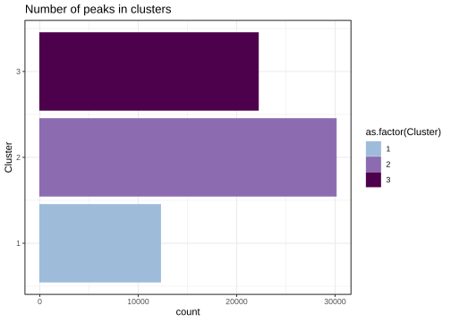

Dunnart peak characterisation
lecook
2022-02-23
Last updated: 2022-03-03
Checks: 7 0
Knit directory: chipseq-cross-species/
This reproducible R Markdown analysis was created with workflowr (version 1.7.0). The Checks tab describes the reproducibility checks that were applied when the results were created. The Past versions tab lists the development history.
Great! Since the R Markdown file has been committed to the Git repository, you know the exact version of the code that produced these results.
Great job! The global environment was empty. Objects defined in the global environment can affect the analysis in your R Markdown file in unknown ways. For reproduciblity it’s best to always run the code in an empty environment.
The command set.seed(20220209) was run prior to running the code in the R Markdown file. Setting a seed ensures that any results that rely on randomness, e.g. subsampling or permutations, are reproducible.
Great job! Recording the operating system, R version, and package versions is critical for reproducibility.
Nice! There were no cached chunks for this analysis, so you can be confident that you successfully produced the results during this run.
Great job! Using relative paths to the files within your workflowr project makes it easier to run your code on other machines.
Great! You are using Git for version control. Tracking code development and connecting the code version to the results is critical for reproducibility.
The results in this page were generated with repository version faabd95. See the Past versions tab to see a history of the changes made to the R Markdown and HTML files.
Note that you need to be careful to ensure that all relevant files for the analysis have been committed to Git prior to generating the results (you can use wflow_publish or wflow_git_commit). workflowr only checks the R Markdown file, but you know if there are other scripts or data files that it depends on. Below is the status of the Git repository when the results were generated:
Ignored files:
Ignored: .RData
Ignored: .Rhistory
Ignored: analysis/.RData
Ignored: analysis/.Rhistory
Ignored: data/genomic_data/
Ignored: output/annotations/
Ignored: output/bam_files/
Ignored: output/filtered_peaks/
Ignored: output/logs/
Ignored: output/peaks/
Ignored: output/plots/
Ignored: output/qc/A-1_input.SeqDepthNorm.bw
Ignored: output/qc/A-1_input.SeqDepthNorm_dunnart_downSampled.bw
Ignored: output/qc/A-1_input.ccurve.txt
Ignored: output/qc/A-1_input.extrap.txt
Ignored: output/qc/A-1_input_R1_trimmed.fastq.gz
Ignored: output/qc/A-1_input_est_lib_complex_metrics.txt
Ignored: output/qc/A-2_H3K4me3.SeqDepthNorm.bw
Ignored: output/qc/A-2_H3K4me3.ccurve.txt
Ignored: output/qc/A-2_H3K4me3.extrap.txt
Ignored: output/qc/A-2_H3K4me3_R1_trimmed.fastq.gz
Ignored: output/qc/A-2_H3K4me3_est_lib_complex_metrics.txt
Ignored: output/qc/A-2_H3K4me3_vs_A-1_input.frip_default.txt
Ignored: output/qc/A-2_H3K4me3_vs_B-1_input.frip_default.txt
Ignored: output/qc/A-3_H3K27ac.SeqDepthNorm.bw
Ignored: output/qc/A-3_H3K27ac.SeqDepthNorm_dunnart_downSampled.bw
Ignored: output/qc/A-3_H3K27ac.ccurve.txt
Ignored: output/qc/A-3_H3K27ac.extrap.txt
Ignored: output/qc/A-3_H3K27ac_R1_trimmed.fastq.gz
Ignored: output/qc/A-3_H3K27ac_est_lib_complex_metrics.txt
Ignored: output/qc/A-3_H3K27ac_vs_A-1_input.frip_default.txt
Ignored: output/qc/A-3_H3K27ac_vs_B-1_input.frip_default.txt
Ignored: output/qc/B-1_input.SeqDepthNorm.bw
Ignored: output/qc/B-1_input.SeqDepthNorm_dunnart_downSampled.bw
Ignored: output/qc/B-1_input.ccurve.txt
Ignored: output/qc/B-1_input.extrap.txt
Ignored: output/qc/B-1_input_R1_trimmed.fastq.gz
Ignored: output/qc/B-1_input_est_lib_complex_metrics.txt
Ignored: output/qc/B-2_H3K4me3.SeqDepthNorm.bw
Ignored: output/qc/B-2_H3K4me3.SeqDepthNorm_dunnart_downSampled.bw
Ignored: output/qc/B-2_H3K4me3.ccurve.txt
Ignored: output/qc/B-2_H3K4me3.extrap.txt
Ignored: output/qc/B-2_H3K4me3_R1_trimmed.fastq.gz
Ignored: output/qc/B-2_H3K4me3_est_lib_complex_metrics.txt
Ignored: output/qc/B-2_H3K4me3_vs_A-1_input.frip_default.txt
Ignored: output/qc/B-2_H3K4me3_vs_B-1_input.frip_default.txt
Ignored: output/qc/B-3_H3K27ac.SeqDepthNorm.bw
Ignored: output/qc/B-3_H3K27ac.ccurve.txt
Ignored: output/qc/B-3_H3K27ac.extrap.txt
Ignored: output/qc/B-3_H3K27ac_R1_trimmed.fastq.gz
Ignored: output/qc/B-3_H3K27ac_est_lib_complex_metrics.txt
Ignored: output/qc/B-3_H3K27ac_vs_A-1_input.frip_default.txt
Ignored: output/qc/B-3_H3K27ac_vs_B-1_input.frip_default.txt
Ignored: output/qc/bamPEFragmentSize_rawcounts.tab
Ignored: output/qc/multiBAM_fingerprint_metrics.txt
Ignored: output/qc/multiBAM_fingerprint_rawcounts.txt
Ignored: output/qc/multibamsum.npz
Ignored: output/qc/multibamsum.tab
Ignored: output/qc/multibamsum_dunnart_downSampled.npz
Ignored: output/qc/multibamsum_dunnart_downSampled.tab
Ignored: output/qc/pearsoncor_multibamsum_matrix.txt
Ignored: results/
Untracked files:
Untracked: .snakemake/
Untracked: Rplots.pdf
Untracked: code/basic_wrapper.slurm
Untracked: code/configs/metadata.tsv
Untracked: code/slurmjob.stderr
Untracked: code/slurmjob.stdout
Untracked: code/trimfastq.py
Untracked: data/raw_reads/
Untracked: output/qc/H3K27ac_overlap_default.frip
Untracked: output/rnaseq/
Untracked: slurm-33664196.out
Untracked: slurm-33664197.out
Untracked: slurm-33664198.out
Untracked: slurm-33664199.out
Untracked: slurm-33664200.out
Untracked: slurm-33664201.out
Untracked: slurm-33664202.out
Untracked: slurm-33664203.out
Untracked: slurm-33664204.out
Untracked: slurm-33664205.out
Untracked: slurm-33664206.out
Untracked: slurm-33664207.out
Untracked: test.pdf
Unstaged changes:
Deleted: code/dunnart_peak_calling/trimfastq.py
Modified: output/qc/H3K4me3_overlap_default.frip
Deleted: output/qc/bamPEFragmentSize_hist.png
Deleted: output/qc/multiBAM_fingerprint.png
Deleted: output/qc/pearsoncor_multibamsum.png
Note that any generated files, e.g. HTML, png, CSS, etc., are not included in this status report because it is ok for generated content to have uncommitted changes.
These are the previous versions of the repository in which changes were made to the R Markdown (analysis/dunnart_peak_characterisation.Rmd) and HTML (docs/dunnart_peak_characterisation.html) files. If you’ve configured a remote Git repository (see ?wflow_git_remote), click on the hyperlinks in the table below to view the files as they were in that past version.
| File | Version | Author | Date | Message |
|---|---|---|---|---|
| Rmd | faabd95 | lecook | 2022-03-03 | updated |
| Rmd | 732d337 | lecook | 2022-03-03 | update |
| Rmd | c591390 | lecook | 2022-03-03 | update |
| Rmd | 0be985e | lecook | 2022-03-03 | update |
| Rmd | 4b8f21e | lecook | 2022-03-03 | update |
| Rmd | 2103ae7 | lecook | 2022-03-03 | updates |
| Rmd | 1c82c33 | lecook | 2022-03-03 | update |
| Rmd | ad31704 | lecook | 2022-03-03 | updated |
| Rmd | 9c5a61a | lecook | 2022-02-27 | Merge branch ‘master’ of https://github.com/lecook/chipseq-cross-species into master |
| Rmd | 1ffd9c3 | lecook | 2022-02-27 | update |
| Rmd | 84a98f9 | lecook | 2022-02-27 | change directories |
| Rmd | 8d4d8a5 | lecook | 2022-02-27 | convert code to workflowr |
| Rmd | 38f2f83 | lecook | 2022-02-25 | add code to workflowr |
| Rmd | 1fa92d9 | lecook | 2022-02-23 | add analysis files |
Introduction
This analysis looks through various features of the dunnart peaks including peak intensity, lengths, distance to TSS and nearest gene calls.
Load libraries
library(GenomicRanges)
library(GenomicFeatures)
library(rtracklayer)
library(AnnotationForge)
library(clusterProfiler)
library(ChIPseeker)
library(ggpubr)
library(AnnotationDbi)
library(AnnotationHub)
library(org.Mm.eg.db)
library(plyr)
library(tidyverse)
library(RColorBrewer)
library(ggplot2)
library(data.table)
library(ggridges)
library(reshape2)
library(RColorBrewer)
library(VennDiagram)
library(viridis)
library(hrbrthemes)
library(gghalves)
library(multcompView)
library(factoextra)
library(NbClust)Set up
Set fonts, plot and output directories etc.
plot_dir = "output/plots/"
fullPeak_dir = "output/peaks/"
annot_dir = "output/annotations/"
filterPeaks_dir = "output/filtered_peaks/"
## Set the fonts up so that each plot is the saved the same way.
font = theme(axis.text.x = element_text(size = 25),
axis.text.y = element_text(size = 25),
axis.title.x = element_text(size = 25),
axis.title.y = element_text(size = 25),
legend.title=element_text(size=25), legend.text=element_text(size=25))Peak features
Peak counts, intensity and length.
unfilteredPeakFeatures <- function(fileList, combined.tbl.stack, peak.length.plot, peak.intensity.plot){
files =list.files(fileList, pattern="*r_peaks.narrowPeak|*_only.narrowPeak|*overlap_default.narrowPeak|*and_H3K27ac.narrowPeak", full.names=T) # create list of files in directory
files = as.list(files)
data = lapply(files, function(x) fread(x, header=FALSE, sep="\t", quote = "", na.strings=c("", "NA")))
names(data) = c("enhancers","promoters","H3K27ac_only","H3K27ac","H3K4me3_H3K27ac", "H3K4me3_only","H3K4me3")
df1 = Map(mutate, data, group = names(data))
df1$H3K27ac_only$cre = "enhancers"
df1$H3K4me3_only$cre = "promoters"
df1$H3K4me3_H3K27ac$cre = "promoters"
fullPeaks = rbind(df1$enhancers, df1$promoters, df1$H3K27ac, df1$H3K4me3)
combinedPeaks = rbind(df1$H3K27ac_only, df1$H3K4me3_H3K27ac, df1$H3K4me3_only)
## Plot stacked bar graph with number of peaks for each histone mark
combined.tbl <- with(combinedPeaks, table(group, cre))
combined.tbl <- as.data.frame(combined.tbl)
p = ggplot(combined.tbl, aes(factor(cre), Freq, fill=group)) +
geom_bar(position=position_stack(reverse = TRUE), stat="identity") +
scale_fill_manual(values = c("#FF9D40", "#37B6CE", "#04859D")) +
theme_minimal() + ylab("Number of peaks") +
xlab("")
pdf(file=paste0(plot_dir, combined.tbl.stack), width = 10, height = 7)
print(p)
dev.off()
p
# Peak lengths for H3K4me3 and H3K27ac
fullPeaks$length <- (fullPeaks$V3 - fullPeaks$V2)
level_order <- c('promoter', 'enhancer', 'H3K4me3', 'H3K27ac')
## Plot peak lengths
p = ggplot(fullPeaks, aes(factor(group), y = log10(length)))+ geom_violin(aes(fill=factor(group), color=factor(group))) + geom_boxplot(aes(color=factor(group)), width = .15,
outlier.shape = NA,
position = position_dodge(width=.1)
) + theme_bw() + xlab("") + ylab("Log10 Peak Length")
p <- ggplot(fullPeaks, aes(factor(group, level = level_order), y = log10(length))) +
geom_half_violin(aes(fill=factor(group), color=factor(group)),
side = "r",
position = "dodge"
)+
geom_boxplot(aes(color=factor(group)),
width = .15,
outlier.shape = NA,
fill=c("#FCF8EC","#FCF8EC","#F5F6F7","#E4F3F1"),
position = position_dodge(width=.1)
) +
coord_cartesian(xlim = c(1.2, NA), clip = "off") + theme_bw() + xlab("") + ylab("Log10 Peak Length")
pdf(file=paste0(plot_dir, peak.length.plot), width = 10, height = 7)
print(p + scale_color_manual(values = c("#E9C46A","#E9C46A","#264653","#2A9D8F")) +
scale_fill_manual(values = c("#F1DAA2","#F1DAA2","#AEBABF","#7AC2B9")) + coord_flip())
dev.off()
print(p + scale_color_manual(values = c("#E9C46A","#E9C46A","#264653","#2A9D8F")) +
scale_fill_manual(values = c("#F1DAA2","#F1DAA2","#AEBABF","#7AC2B9")) + coord_flip())
## Plot peak intensity
p <- ggplot(fullPeaks, aes(factor(group, level = level_order), y = log10(V7))) +
geom_half_violin(aes(fill=factor(group), color=factor(group)),
side = "r",
position = "dodge"
)+
geom_boxplot(aes(color=factor(group)),
width = .15,
outlier.shape = NA,
fill=c("#FCF8EC","#FCF8EC","#F5F6F7","#E4F3F1"),
position = position_dodge(width=.1)
) +
coord_cartesian(xlim = c(1.2, NA), clip = "off") + theme_bw() + xlab("") + ylab("Log10 Peak Intensity")
pdf(file=paste0(plot_dir, peak.intensity.plot), width = 10, height = 7)
print(p + scale_color_manual(values = c("#E9C46A","#E9C46A","#264653","#2A9D8F")) +
scale_fill_manual(values = c("#F1DAA2","#F1DAA2","#AEBABF","#7AC2B9")) + coord_flip())
dev.off()
print(p + scale_color_manual(values = c("#E9C46A","#E9C46A","#264653","#2A9D8F")) +
scale_fill_manual(values = c("#F1DAA2","#F1DAA2","#AEBABF","#7AC2B9")) + coord_flip())
}
unfilteredPeakFeatures(fileList = fullPeak_dir, combined.tbl.stack= "dunnart_combined_stacked.pdf",
peak.length.plot = "dunnart_fullPeaks_length.pdf", peak.intensity.plot = "dunnart_fullPeaks_intensity.pdf")

Annotate dunnart peaks
The easiest way to call the nearest genes for the peaks in the dunnart is to use the ChIPseeker package (Guangchuang Yu 2021) as it allows easy integration of non-model organism genomes and has well documented instructions on incorporating BYO genomes with the package. To use the ChIPseeker to annotate peaks, firstly a txdb is needed for the dunnart annotation file. A TxDb class is a container for storing transcript annotations. The dunnart genome doesn’t have a de novo annotation so instead the Tasmanian devil annotation (RefSeq) has been lifted over to the dunnart genome using LiftOff (https://github.com/agshumate/Liftoff).
Build the annotation files for the dunnart
smiCra_txdb <- makeTxDbFromGFF("data/genomic_data/Scras_dunnart_assem1.0_pb-ont-illsr_flyeassem_red-rd-scfitr2_pil2xwgs2_60chr2.gff")Gene ID conversion tables
For downstream analyses, conversion tables between gene databases and between species is needed. This is because the ENSEMBL/ENTREZ IDs for the Tasmanian Devil have fewer links to databases such as GO terms etc. For this I have two conversion tables: 1. Converts Tasmanian devil RefSeq to Tasmanian Devil ENSEMBL IDs 2. Convert Tasmanian Devil ENSEMBL IDs to mouse ENSEMBL IDs
## geneID conversion tables
df2 <- read.table("output/annotations/devil_to_mouse_ensembl.txt", header=TRUE, sep="\t") ## conversion table for devil ENSEMBL to mouse ENSEMBL
df3 <- read.table("output/annotations/refseq_to_ensembl.txt", header=TRUE, sep="\t") ## convertsion table for devil refseq to devil ENSEMBLAnnotate peak files with ChIPseeker
annotatePeaks <- function(peak, outFile, outFile1, outFile2, GOenrich, kegg){
# Annotate peak file based on dunnart GFF
peakAnno <- annotatePeak(peak = peak, tssRegion = c(-3000, 3000), TxDb = smiCra_txdb)
# Write annotation to file
write.table(peakAnno, file=paste0(annot_dir, outFile), sep="\t", quote=F, row.names=F)
peakAnnoDF <- as.data.frame(peakAnno, row.names = NULL)
# # Convert refseq IDs and geneIDs to devil ensembl IDs
peakAnnoDF$ensemblgeneID <- df2$Gene.stable.ID[match(unlist(peakAnnoDF$geneId), df2$Gene.name)]
peakAnnoDF$ensemblgeneID = replace(peakAnnoDF$ensemblgeneID,is.na(peakAnnoDF$ensemblgeneID),"-")
peakAnnoDF$transcriptIdAltered <- gsub("\\..*","", peakAnnoDF$transcriptId)
peakAnnoDF$refseqID <- df3$Ensembl.Gene.ID[match(unlist(peakAnnoDF$transcriptIdAltered), df3$RefSeq.mRNA.Accession)]
peakAnnoDF$refseqID = replace(peakAnnoDF$refseqID,is.na(peakAnnoDF$refseqID),"-")
peakAnnoDF$combined <- ifelse(peakAnnoDF$refseqID == "-", peakAnnoDF$ensemblgeneID, peakAnnoDF$refseqID)
peakAnnoDF$combined[peakAnnoDF$combined == as.character("-")] <- NA
peakAnnoDF <- peakAnnoDF[!is.na(peakAnnoDF$combined),]
write.table(peakAnnoDF, paste0(annot_dir, outFile2), sep="\t", quote=F, row.names=F)
# # Convert devil ensembl to mouse ensembl
peakAnnoDF$mouseensembl <- df2$Mouse.gene.stable.ID[match(unlist(peakAnnoDF$combined), df2$Gene.stable.ID)]
# # Write annotation with converted IDs
peakAnnoDF$mouseensembl[peakAnnoDF$mouseensembl == as.character("")] <- NA
peakAnnoDF <- peakAnnoDF[!is.na(peakAnnoDF$mouseensembl),]
write.table(peakAnnoDF, paste0(annot_dir, outFile1), sep="\t", quote=F, row.names=F)
# # GO enrichment analysis
GO <- enrichGO(gene = peakAnnoDF$mouseensembl,
keyType = "ENSEMBL",
OrgDb = org.Mm.eg.db,
ont = "BP",
pAdjustMethod = "fdr",
qvalueCutoff = 0.01,
readable = TRUE)
write.table(GO, paste0(annot_dir, GOenrich), sep="\t", quote=F, row.names=F)
# convert mouse ensembl to entrezID
suppressWarnings(gene.df <- bitr(geneID=peakAnnoDF$mouseensembl, fromType="ENSEMBL", toType="ENTREZID", OrgDb="org.Mm.eg.db" ))
# ## kegg analysis
kk <- enrichKEGG(gene = gene.df$ENTREZID, organism = "mmu", pAdjustMethod = "fdr",
qvalueCutoff = 0.01, universe = )
write.table(kk, paste0(annot_dir, kegg), sep="\t", quote=F, row.names=F)
}
### Enhancer-associated peaks annotation
annotatePeaks(peak = paste0(fullPeak_dir, "dunnart_enhancer_peaks.narrowPeak"), outFile = "dunnart_enhancer_annotation.txt",
outFile1 = "dunnart_enhancer_annotationConvertedIDs.txt", GOenrich = "enhancer_mm10GOenrich.txt",
kegg="enhancer_KEGG.txt", outFile2 = "dunnart_enhancer_annotationConvertedIDs_t.devil.txt")>> loading peak file... 2022-03-03 21:45:02
>> preparing features information... 2022-03-03 21:45:03
>> identifying nearest features... 2022-03-03 21:45:03
>> calculating distance from peak to TSS... 2022-03-03 21:45:04
>> assigning genomic annotation... 2022-03-03 21:45:04
>> assigning chromosome lengths 2022-03-03 21:45:13
>> done... 2022-03-03 21:45:13 ### Promoter-associated peaks annotation
annotatePeaks(peak = paste0(fullPeak_dir, "dunnart_promoter_peaks.narrowPeak"), outFile = "dunnart_promoter_annotation.txt",
outFile1 = "dunnart_promoter_annotationConvertedIDs.txt" , GOenrich = "promoter_mm10GOenrich.txt",
kegg="promoter_KEGG.txt", outFile2 = "dunnart_promoter_annotationConvertedIDs_t.devil.txt")>> loading peak file... 2022-03-03 21:46:18
>> preparing features information... 2022-03-03 21:46:18
>> identifying nearest features... 2022-03-03 21:46:18
>> calculating distance from peak to TSS... 2022-03-03 21:46:19
>> assigning genomic annotation... 2022-03-03 21:46:19
>> assigning chromosome lengths 2022-03-03 21:46:21
>> done... 2022-03-03 21:46:21 ### H3K4me3-associated peaks annotation
annotatePeaks(peak = paste0(fullPeak_dir, "H3K4me3_overlap_default.narrowPeak"), outFile = "dunnart_H3K4me3_annotation.txt",
outFile1 = "dunnart_H3K4me3_annotationConvertedIDs.txt" , GOenrich = "H3K4me3_mm10GOenrich.txt",
kegg="H3K4me3_KEGG.txt", outFile2 = "dunnart_H3K4me3_annotationConvertedIDs_t.devil.txt")>> loading peak file... 2022-03-03 21:47:00
>> preparing features information... 2022-03-03 21:47:01
>> identifying nearest features... 2022-03-03 21:47:01
>> calculating distance from peak to TSS... 2022-03-03 21:47:02
>> assigning genomic annotation... 2022-03-03 21:47:02
>> assigning chromosome lengths 2022-03-03 21:47:04
>> done... 2022-03-03 21:47:04 ### H3K27ac-associated peaks annotation
annotatePeaks(peak = paste0(fullPeak_dir, "H3K27ac_overlap_default.narrowPeak"), outFile = "dunnart_H3K27ac_annotation.txt",
outFile1 = "dunnart_H3K27ac_annotationConvertedIDs.txt" , GOenrich = "H3K27ac_mm10GOenrich.txt",
kegg="H3K27ac_KEGG.txt", outFile2 = "dunnart_H3K27ac_annotationConvertedIDs_t.devil.txt")>> loading peak file... 2022-03-03 21:47:43
>> preparing features information... 2022-03-03 21:47:44
>> identifying nearest features... 2022-03-03 21:47:44
>> calculating distance from peak to TSS... 2022-03-03 21:47:45
>> assigning genomic annotation... 2022-03-03 21:47:45
>> assigning chromosome lengths 2022-03-03 21:47:47
>> done... 2022-03-03 21:47:47 Distance to the nearest TSS
Now see where the peaks are located in relation to the TSS. Promoters should be reasonably close to the TSS and enhancers more distal to the TSS. Plot distance to TSS for all unfiltered peaks
distanceToTSS <- function(fileList, enhancerTSSplot, promoterTSSplot, TSSplot){
files =list.files(fileList, pattern= "annotation.txt", full.names=T) # create list of files in directory
files = as.list(files)
data = lapply(files, function(x) fread(x, header=TRUE, sep="\t", quote = "", na.strings=c("", "NA"))) # read in all files
names(data) = c("enhancers","H3K27ac","H3K4me3","promoter")
df1 = Map(mutate, data, mark = names(data))
enhProm = list(as.data.table(df1$promoter), as.data.table(df1$enhancers))
enhProm = suppressWarnings(lapply(enhProm, function(x) x[,log10_abs_dist:=log10(abs(distanceToTSS)+1)][,log10_abs_dist:=ifelse(distanceToTSS<0,-log10_abs_dist,log10_abs_dist)]))
names(enhProm) = c("promoters","enhancers")
pdf(file = paste0(plot_dir, enhancerTSSplot), width=10, height = 7)
print(ggplot(enhProm$enhancers, aes(x=log10_abs_dist)) +
geom_density(alpha=0.5, color="#2A9D8F", fill="#2A9D8F") +
scale_y_continuous(limits=c(0,0.3), labels = scales::percent) +
scale_x_continuous(limits=c(-7, 7)) + theme_bw())
dev.off()
print(ggplot(enhProm$enhancers, aes(x=log10_abs_dist)) +
geom_density(alpha=0.5, color="#2A9D8F", fill="#2A9D8F") +
scale_y_continuous(limits=c(0,0.3), labels = scales::percent) +
scale_x_continuous(limits=c(-7, 7)) + theme_bw())
pdf(file = paste0(plot_dir, promoterTSSplot), width=10, height = 7)
print(ggplot(enhProm$promoters, aes(x=log10_abs_dist)) +
geom_density(alpha=0.5, color="#2A9D8F", fill="#2A9D8F") +
scale_y_continuous(limits=c(0,0.3), labels = scales::percent) +
scale_x_continuous(limits=c(-7, 7)) + theme_bw())
dev.off()
print(ggplot(enhProm$promoters, aes(x=log10_abs_dist)) +
geom_density(alpha=0.5, color="#2A9D8F", fill="#2A9D8F") +
scale_y_continuous(limits=c(0,0.3), labels = scales::percent) +
scale_x_continuous(limits=c(-7, 7)) + theme_bw())
enhProm = rbindlist(enhProm,)
pdf(file = paste0(plot_dir, TSSplot), width=10, height = 7)
print(ggplot(enhProm, aes(x=log10_abs_dist, fill=factor(mark), color=factor(mark))) +
geom_density(alpha=0.5) +scale_color_manual(values=c("#E9C46A", "#2A9D8F")) + scale_fill_manual(values=c("#E9C46A", "#2A9D8F")) +
scale_x_continuous(limits=c(-7, 7)) + theme_bw() + font)
dev.off()
print(ggplot(enhProm, aes(x=log10_abs_dist, fill=factor(mark), color=factor(mark))) +
geom_density(alpha=0.5) +scale_color_manual(values=c("#E9C46A", "#2A9D8F")) + scale_fill_manual(values=c("#E9C46A", "#2A9D8F")) +
scale_x_continuous(limits=c(-7, 7)) + theme_bw() + font)
}
distanceToTSS(fileList = annot_dir, enhancerTSSplot="dunnart_enhancerTSS.pdf",
promoterTSSplot="dunnart_promoterTSS.pdf", TSSplot = "dunnart_TSS.pdf")


From this we can see that the promoter peaks have a large amount of peaks a long way from the TSS - suggests that these are either actually enhancers or they represent unannotated transcripts. Probably a mixture of both based on comparison with mouse peaks (where the annotation is better) there are not as many peaks in this distal regions. Use k-means clustering to group the peaks to decide on a cut off for “promoter” peaks. This will be more conservative for what we identify as promoters.
k-means clustering
We can use k-means clustering with the MacQueen algorithm (morissette_k-means_2013) to perform unsupervised clustering on promoter-associated peaks into 3 clusters based on distance to the closest TSS.
set.seed(3)
kmeansCluster <- function(file, plot1, plot2, output){
data = fread(file, header=TRUE, sep="\t", quote = "") # read in all files
data = data[,log10_dist:=log10(abs(distanceToTSS)+1.1)][,log10_dist:=ifelse(distanceToTSS<0,-log10_dist,log10_dist)]
data = data[,abs_dist:=log10(abs(distanceToTSS)+1.1)]
data = data %>% dplyr::select("V4", "width", "V7", "distanceToTSS", "log10_dist", "abs_dist", "annotation")
## plot the number of peaks in each cluster
## Using the MacQueen algorithm instead of the default Lloyd
## The algorithm is more efficient as it updates centroids more often and usually needs to
## perform one complete pass through the cases to converge on a solution.
df = data[,5]
cre.kmeans = kmeans(df, 3, iter.max=100, nstart=25, algorithm="MacQueen")
cre.kmeans_table = data.frame(cre.kmeans$size, cre.kmeans$centers)
cre.kmeans_df = data.frame(Cluster = cre.kmeans$cluster, data)
pdf(plot1, width=10, height = 7)
p <- ggplot(data = cre.kmeans_df, aes(y = Cluster, fill=as.factor(Cluster), color=as.factor(Cluster))) +
geom_bar() +
theme(plot.title = element_text(hjust = 0.5)) + theme_bw() + font
pdf(plot1)
print(p + scale_color_manual(values = c('#9EBCDA','#8C6BB1', "#4D004B")) + scale_fill_manual(values = c('#9EBCDA','#8C6BB1', "#4D004B")))
dev.off()
print(p + scale_color_manual(values = c('#9EBCDA','#8C6BB1', "#4D004B")) + scale_fill_manual(values = c('#9EBCDA','#8C6BB1', "#4D004B")))
p <- ggplot(cre.kmeans_df, aes(x=log10_dist, fill=as.factor(Cluster), color=as.factor(Cluster))) +
geom_histogram(binwidth=0.1, position = 'identity') +
theme_bw()+ font
pdf(plot2, width = 10, height = 7)
print(p + scale_color_manual(values = c('#9EBCDA','#8C6BB1', "#4D004B")) + scale_fill_manual(values = c('#9EBCDA','#8C6BB1', "#4D004B")))
dev.off()
print(p + scale_color_manual(values = c('#9EBCDA','#8C6BB1', "#4D004B")) + scale_fill_manual(values = c('#9EBCDA','#8C6BB1', "#4D004B")))
write.table(cre.kmeans_df, paste0(filterPeaks_dir, output), sep="\t", quote=F, row.names=F)
return(cre.kmeans_df)
}
promoter_kmeans = kmeansCluster(file = paste0(annot_dir, "dunnart_promoter_annotation.txt"), plot1 = paste0(plot_dir, "promoter_kmeans_bar.pdf"), plot2 = paste0(plot_dir, "promoter_kmeans_histogram.pdf"), output = "promoter_kmeans_peaks.txt")
Filter for cluster 1 and make final promoter/enhancer plots
plotPeakClusters <- function(x, y, enhancer, promoter, plotTSS, peakIntensityPlot, peakWidthPlot, annotation){
enhancer.annot= fread(enhancer, header=TRUE, sep="\t", quote = "")
enhancer.annot = enhancer.annot[,log10_dist:=log10(abs(distanceToTSS)+1)][,log10_dist:=ifelse(distanceToTSS<0,-log10_dist,log10_dist)]
enhancer.annot = enhancer.annot[,abs_dist:=abs(distanceToTSS)]
promoter.annot = fread(promoter, header=TRUE, sep="\t", quote = "")
promoter.annot = promoter.annot[,log10_dist:=log10(abs(distanceToTSS)+1)][,log10_dist:=ifelse(distanceToTSS<0,-log10_dist,log10_dist)]
promoter.annot = promoter.annot[,abs_dist:=abs(distanceToTSS)]
promoter.annot$label = "promoter"
enhancer.annot$label = "enhancer"
enhancer.annot = enhancer.annot %>% dplyr::select("V4", "width", "V7", "distanceToTSS", "log10_dist", "abs_dist", "annotation", "label")
promoter.annot = promoter.annot %>% dplyr::select("V4", "width", "V7", "distanceToTSS", "log10_dist", "abs_dist", "annotation", "label")
promoter.kmeans = fread(x, header=TRUE, sep="\t", quote = "")
promoter.kmeans$cre = "promoter"
for (i in 1:nrow(promoter.kmeans)) {
if(promoter.kmeans$Cluster[i]=='1' & promoter.kmeans$cre[i]=='promoter') {
promoter.kmeans[i, 'label'] <- "promoter cluster 1"
}
else if(promoter.kmeans$Cluster[i]=='2' & promoter.kmeans$cre[i]=='promoter') {
promoter.kmeans[i, 'label'] <- "promoter cluster 2"
}
else if(promoter.kmeans$Cluster[i]=='3' & promoter.kmeans$cre[i]=='promoter') {
promoter.kmeans[i, 'label'] <- "promoter cluster 3"
}
}
data2 = promoter.kmeans %>% dplyr::select("V4", "width", "V7", "distanceToTSS", "log10_dist", "abs_dist", "annotation", "label")
all_peaks = rbind(data2, enhancer.annot, promoter.annot)
all_peaks = as.data.table(all_peaks)
all_peaks = all_peaks[,log10_intensity:=log10(V7)]
all_peaks = all_peaks[,log10_width:=log10(width)]
colors = c("#E9C46A","#e34a33", "#fdbb84","#fee8c8", "#2A9D8F")
## Plot distance to TSS
pdf(plotTSS, width=10, height = 7)
print(ggplot(all_peaks, aes(x=log10_dist, colour = factor(label), fill=factor(label))) + geom_density(aes(x = log10_dist, y = ..density..), position="stack", alpha=0.7) +
theme_bw() + scale_fill_manual(values = colors)+
scale_color_manual(values = colors) + font)
dev.off()
print(ggplot(all_peaks, aes(x=log10_dist, colour = factor(label), fill=factor(label))) + geom_density(aes(x = log10_dist, y = ..density..), position="stack", alpha=0.7) +
theme_bw() + scale_fill_manual(values = colors)+
scale_color_manual(values = colors) + font)
my_comparisons = list( c("promoter cluster 1", "promoter cluster 2"), c("promoter cluster 1", "promoter cluster 3"), c("promoter cluster 1", "promoter"), c("promoter cluster 1", "enhancer") )
## Plot peak intensity
p <- ggplot(all_peaks, aes(factor(label), y = log10_intensity)) +
geom_violin(aes(fill=factor(label), color=factor(label)),
position = "dodge"
)+
geom_boxplot(aes(color=factor(label)),
outlier.shape = NA,
width = .15,
notch = TRUE,
position = position_dodge(width=.1)
) + theme_bw() + xlab("") + ylab("Log 10 peak intensity")
pdf("test.pdf", width=10, height = 8)
print(p + scale_color_manual(values = colors) +
scale_fill_manual(values = colors) + font + stat_compare_means(comparisons = my_comparisons))
dev.off()
print(p + scale_color_manual(values = colors) +
scale_fill_manual(values = colors) + font + stat_compare_means(comparisons = my_comparisons))
## Plot peak width
p <- ggplot(all_peaks, aes(factor(label), y = log10_width)) +
geom_violin(aes(fill=factor(label), color=factor(label)),
position = "dodge"
)+
geom_boxplot(aes(color=factor(label)),
outlier.shape = NA,
width = .15,
notch = TRUE,
position = position_dodge(width=.1)
) + theme_bw() + xlab("") + ylab("Log 10 peak width")
pdf(peakWidthPlot, width=9, height = 8)
print(p + scale_color_manual(values =colors) +
scale_fill_manual(values = colors) + font + stat_compare_means(comparisons = my_comparisons))
dev.off()
print(p + scale_color_manual(values =colors) +
scale_fill_manual(values = colors) + font + stat_compare_means(comparisons = my_comparisons))
## Plot genomic regions
df2 = rbind(promoter_kmeans)
#df1 = rbindlist(df1,) ## bind rows back together
df2 = map_df(df2, ~ gsub(" ().*", "", .x))# remove everything after the first space
#promoters_only = df2[complete.cases(df2), ]
tbl = with(df2, table(annotation, Cluster)) %>% as.data.frame()
pdf(annotation)
ggplot(tbl, aes(factor(annotation), Freq, fill=factor(Cluster))) +
geom_bar(position=position_stack(reverse = TRUE), stat="identity") +
#geom_text(data=subset(data,Freq != 0),aes(label=Freq, y=pos), size=3)+
scale_fill_manual(values = c('#9EBCDA','#8C6BB1', "#4D004B")) +
theme_minimal() + ylab("Number of peaks") +
xlab("")
dev.off()
ggplot(tbl, aes(factor(annotation), Freq, fill=factor(Cluster))) +
geom_bar(position=position_stack(reverse = TRUE), stat="identity") +
#geom_text(data=subset(data,Freq != 0),aes(label=Freq, y=pos), size=3)+
scale_fill_manual(values = c('#9EBCDA','#8C6BB1', "#4D004B")) +
theme_minimal() + ylab("Number of peaks") +
xlab("")
}
plotPeakClusters(peakWidthPlot = paste0(plot_dir, "filteredPeaks_peakWidthPlot.pdf"),plotTSS =paste0(plot_dir, "filteredPeaks_peakDistanceToTSS.pdf"),
peakIntensityPlot = paste0(plot_dir, "filteredPeaks_peakIntensityPlot.pdf"), annotation = paste0(plot_dir, "filteredPeaks_peakAnnotation.pdf"),
x= paste0(filterPeaks_dir, "promoter_kmeans_peaks.txt"), enhancer = paste0(annot_dir, "dunnart_enhancer_annotation.txt"),
promoter = paste0(annot_dir, "dunnart_promoter_annotation.txt"))


Extract cluster groups from narrowPeak files and save separately
promoter.kmeans = fread(paste0(filterPeaks_dir, "promoter_kmeans_peaks.txt"))
cluster1 <- promoter.kmeans$V4[promoter.kmeans$Cluster==1]
cluster2 <- promoter.kmeans$V4[promoter.kmeans$Cluster==2]
cluster3 <- promoter.kmeans$V4[promoter.kmeans$Cluster==3]
extractClusters = function(promoter, cluster1, cluster2, cluster3, out1, out2, out3){
file= fread(promoter, header=FALSE, sep="\t", quote = "")
write.table(subset(file, V4 %in% cluster1), out1, quote=FALSE, col.names=FALSE, row.names=FALSE, sep="\t")
write.table(subset(file, V4 %in% cluster2), out2, quote=FALSE, col.names=FALSE, row.names=FALSE, sep="\t")
write.table(subset(file, V4 %in% cluster3), out3, quote=FALSE, col.names=FALSE, row.names=FALSE, sep="\t")
}
extractClusters(promoter = paste0(fullPeak_dir, "dunnart_promoter_peaks.narrowPeak"), out1 = paste0(filterPeaks_dir, "cluster1_promoters.narrowPeak"),
out2 =paste0(filterPeaks_dir, "cluster2_promoters.narrowPeak") , out3 = paste0(filterPeaks_dir, "cluster3_promoters.narrowPeak"), cluster1 = cluster1,
cluster2 = cluster2, cluster3 = cluster3)Anotate promoter clusters
annotatePeaks(peak = paste0(filterPeaks_dir, "cluster1_promoters.narrowPeak"),
outFile = "cluster1_promoter_annotation.txt", outFile1 = "cluster1_promoter_annotationConvertedIDs.txt" ,
GOenrich = "cluster1_mm10GOenrich.txt",
kegg="cluster1_KEGG.txt", outFile2 = "cluster1_annotationConvertedIDs_t.devil.txt")>> loading peak file... 2022-03-03 21:51:28
>> preparing features information... 2022-03-03 21:51:29
>> identifying nearest features... 2022-03-03 21:51:29
>> calculating distance from peak to TSS... 2022-03-03 21:51:29
>> assigning genomic annotation... 2022-03-03 21:51:29
>> assigning chromosome lengths 2022-03-03 21:51:30
>> done... 2022-03-03 21:51:30 annotatePeaks(peak = paste0(filterPeaks_dir, "cluster2_promoters.narrowPeak"),
outFile = "cluster2_promoter_annotation.txt", outFile1 = "cluster2_promoter_annotationConvertedIDs.txt" ,
GOenrich = "cluster2_mm10GOenrich.txt",
kegg="cluster2_KEGG.txt", outFile2 = "cluster2_annotationConvertedIDs_t.devil.txt")>> loading peak file... 2022-03-03 21:52:03
>> preparing features information... 2022-03-03 21:52:03
>> identifying nearest features... 2022-03-03 21:52:03
>> calculating distance from peak to TSS... 2022-03-03 21:52:03
>> assigning genomic annotation... 2022-03-03 21:52:03
>> assigning chromosome lengths 2022-03-03 21:52:05
>> done... 2022-03-03 21:52:05 annotatePeaks(peak = paste0(filterPeaks_dir, "cluster3_promoters.narrowPeak"),
outFile = "cluster3_promoter_annotation.txt", outFile1 = "cluster3_promoter_annotationConvertedIDs.txt" ,
GOenrich = "cluster3_mm10GOenrich.txt",
kegg="cluster3_KEGG.txt", outFile2 = "cluster3_annotationConvertedIDs_t.devil.txt")>> loading peak file... 2022-03-03 21:52:37
>> preparing features information... 2022-03-03 21:52:37
>> identifying nearest features... 2022-03-03 21:52:37
>> calculating distance from peak to TSS... 2022-03-03 21:52:37
>> assigning genomic annotation... 2022-03-03 21:52:37
>> assigning chromosome lengths 2022-03-03 21:52:38
>> done... 2022-03-03 21:52:38 Assess distance to TSS for clusters
distanceToTSS <- function(fileList, enhancerTSSplot, promoterTSSplot, TSSplot){
files =list.files(fileList, pattern= "_annotation.txt", full.names=T) # create list of files in directory
files = as.list(files)
data = lapply(files, function(x) fread(x, header=TRUE, sep="\t", quote = "", na.strings=c("", "NA"))) # read in all files
names(data) = c("cluster1", "cluster2", "cluster3", "enhancers","H3K27ac","H3K4me3","promoters")
enhProm = Map(mutate, data, mark = names(data))
#promoter_5kb = x
#promoter_5kb$mark = "promoter_5kb"
#enhProm = list(df1$enhancers, df1$promoters)
enhProm = suppressWarnings(lapply(enhProm, function(x) x[,log10_abs_dist:=log10(abs(distanceToTSS)+1)][,log10_abs_dist:=ifelse(distanceToTSS<0,-log10_abs_dist,log10_abs_dist)]))
enhProm = suppressWarnings(lapply(enhProm, function(x) x[,abs_dist:=abs(distanceToTSS)]))
#names(enhProm) = c("enhancers","promoters", "promoter_5kb")
level_order = c("cluster1", "cluster2", "cluster3", "promoters", "enhancers", "H3K4me3", "H3K27ac")
pdf(file = paste0(plot_dir, enhancerTSSplot), width=10, height = 7)
print(ggplot(enhProm$enhancers, aes(x=log10_abs_dist, color=factor(mark), fill=factor(mark))) +
geom_density(alpha=0.5) + theme_bw() + scale_color_manual(values = c('#E9C46A'))
+ scale_fill_manual(values = c('#E9C46A')) + font)
dev.off()
print(ggplot(enhProm$enhancers, aes(x=log10_abs_dist, color=factor(mark), fill=factor(mark))) +
geom_density(alpha=0.5) + theme_bw() + scale_color_manual(values = c('#E9C46A'))
+ scale_fill_manual(values = c('#E9C46A')) + font)
enhProm = rbind(enhProm$promoters, enhProm$cluster1, enhProm$cluster2, enhProm$cluster3 ,use.names=TRUE)
pdf(file = paste0(plot_dir, TSSplot), width=15, height = 7)
print(ggplot(enhProm, aes(x=log10_abs_dist, color = factor(mark, level=level_order), fill = factor(mark, level=level_order))) +
geom_density(position = "stack", alpha=0.8) +
theme_bw() )
#+ scale_color_manual(values = c('#4D004B', '#E9C46A','#2A9D8F'))
#+ scale_fill_manual(values = c('#4D004B', '#E9C46A','#2A9D8F')) + font)
dev.off()
print(ggplot(enhProm, aes(x=log10_abs_dist, color = factor(mark, level=level_order), fill = factor(mark, level=level_order))) +
geom_density(position = "stack", alpha=0.8) +
theme_bw() )
#+ scale_color_manual(values = c('#4D004B', '#E9C46A','#2A9D8F'))
#+ scale_fill_manual(values = c('#4D004B', '#E9C46A','#2A9D8F')) + font)
}
distanceToTSS(fileList = annot_dir, enhancerTSSplot="dunnart_enhancerTSS.pdf", promoterTSSplot="dunnart_filtered_promoterTSS.pdf",
TSSplot = "dunnart_all_TSS.pdf")

Now look at CpG% and GC% for these groups
Run Homer on the clusters
- Load modules and create genome db for use within homer
- Annotate peaks to extract GC and CpG content information using annotatePeaks.pl
module load perl
module load gcc
module load web_proxy
module load wget
1. Load genome for use with HOMER tools
## This will allow the genome to be called within the tools
loadGenome.pl -name smiCra1 -org null -fasta data/genomic_data/Scras_dunnart_assem1.0_pb-ont-illsr_flyeassem_red-rd-scfitr2_pil2xwgs2_60chr.fasta -gff data/genomic_data/Scras_dunnart_assem1.0_pb-ont-illsr_flyeassem_red-rd-scfitr2_pil2xwgs2_60chr2.gff
2. Annotate peaks to extract GC and CpG content information
annotatePeaks.pl output/filtered_peaks/cluster1_promoters.narrowPeak smiCra1 -gff data/genomic_data/Scras_dunnart_assem1.0_pb-ont-illsr_flyeassem_red-rd-scfitr2_pil2xwgs2_60chr2.gff -CpG -cons > output/annotations/cluster1_promoters_homerAnnot.txt
annotatePeaks.pl output/filtered_peaks/cluster2_promoters.narrowPeak smiCra1 -gff Scras_dunnart_assem1.0_pb-ont-illsr_flyeassem_red-rd-scfitr2_pil2xwgs2_60chr2.gff -CpG -cons > output/annotations/cluster2_promoters_homerAnnot.txt
annotatePeaks.pl output/filtered_peaks/cluster3_promoters.narrowPeak smiCra1 -gff Scras_dunnart_assem1.0_pb-ont-illsr_flyeassem_red-rd-scfitr2_pil2xwgs2_60chr2.gff -CpG -cons > output/annotations/cluster3_promoters_homerAnnot.txt
annotatePeaks.pl output/peaks/dunnart_promoter_peaks.narrowPeak smiCra1 -gff data/genomic_data/Scras_dunnart_assem1.0_pb-ont-illsr_flyeassem_red-rd-scfitr2_pil2xwgs2_60chr2.gff -CpG -cons > output/annotations/dunnart_promoters_homerAnnot.txt
annotatePeaks.pl output/peaks/dunnart_enhancer_peaks.narrowPeak smiCra1 -gff data/genomic_data/Scras_dunnart_assem1.0_pb-ont-illsr_flyeassem_red-rd-scfitr2_pil2xwgs2_60chr2.gff -CpG -cons > output/annotations/dunnart_enhancers_homerAnnot.txt GCcontent = function(fileList, gcPlot, cpgPlot, dataframestobind){
files =list.files(fileList, pattern= "homerAnnot.txt", full.names=T) # create list of files in directory
files = as.list(files)
data = lapply(files, function(x) fread(x, header=TRUE, sep="\t", quote = "", na.strings=c("", "NA"))) # read in all files
names(data) = c("cluster1","cluster2","cluster3","enhancers", "promoters")
df1 = Map(mutate, data, group = names(data))
df1 = lapply(df1, function(x) x %>% dplyr::select("Chr", "Start", "End", "Peak Score", "Distance to TSS", "CpG%", "GC%", "group") %>% as.data.table())
df1 = rbind(df1$cluster1, df1$cluster2, df1$cluster3, df1$promoters, df1$enhancers)
colnames(df1)[5:7] <- c("distanceToTSS","CpG", "GC")
df1[is.na(df1)] <- 0
df1 = df1[,log10_abs_dist:=log10(abs(distanceToTSS)+1)][,log10_abs_dist:=ifelse(distanceToTSS<0,-log10_abs_dist,log10_abs_dist)]
my_comparisons = list( c("cluster1", "cluster2"), c("cluster1", "cluster3"), c("cluster1", "promoters"),
c("cluster1", "enhancers"), c("promoters", "enhancers"), c("promoters", "cluster2"),
c("promoters", "cluster3"), c("enhancers", "cluster2"), c("enhancers", "cluster3"), c("cluster2", "cluster3") )
p <- ggplot(df1, aes(factor(group), y = GC)) +
geom_violin(aes(fill=factor(group), color=factor(group)),
position = "dodge"
)+
geom_boxplot(aes(color=factor(group)),
outlier.shape = NA,
width = .15,
notch = TRUE,
fill=c("#E7EEF6","#D4C7E2","#D3BFD2", "#FCF8EC","#E4F3F1"),
position = position_dodge(width=.1)
) + theme_bw() + xlab("") + ylab("GC content")
pdf(gcPlot, width=9, height = 8)
print(p + font + scale_color_manual(values = c('#9EBCDA','#8C6BB1','#4D004B', '#E9C46A','#2A9D8F')) +
scale_fill_manual(values = c("#B6CDE3","#A990C4","#7A4078" ,"#F1DAA2","#7AC2B9")) + stat_compare_means(p.adjust.method = "fdr", comparisons = my_comparisons))
dev.off()
print(p + font + scale_color_manual(values = c('#9EBCDA','#8C6BB1','#4D004B', '#E9C46A','#2A9D8F')) +
scale_fill_manual(values = c("#B6CDE3","#A990C4","#7A4078" ,"#F1DAA2","#7AC2B9")) + stat_compare_means(p.adjust.method = "fdr", comparisons = my_comparisons))
p <- ggplot(df1, aes(factor(group), y = CpG)) +
geom_violin(aes(fill=factor(group), color=factor(group)),
position = "dodge"
)+
geom_boxplot(aes(color=factor(group)),
outlier.shape = NA,
width = .15,
notch = TRUE,
fill=c("#E7EEF6","#D4C7E2","#D3BFD2", "#FCF8EC","#E4F3F1"),
position = position_dodge(width=.1)
) + theme_bw() + xlab("") + ylab("CpG")
pdf(cpgPlot, width=9, height = 8)
print(p + font + scale_color_manual(values = c('#9EBCDA','#8C6BB1','#4D004B', '#E9C46A','#2A9D8F')) +
scale_fill_manual(values = c("#B6CDE3","#A990C4","#7A4078" ,"#F1DAA2","#7AC2B9")) + stat_compare_means(p.adjust.method = "fdr", comparisons = my_comparisons))
dev.off()
print(p + font + scale_color_manual(values = c('#9EBCDA','#8C6BB1','#4D004B', '#E9C46A','#2A9D8F')) +
scale_fill_manual(values = c("#B6CDE3","#A990C4","#7A4078" ,"#F1DAA2","#7AC2B9")) + stat_compare_means(p.adjust.method = "fdr", comparisons = my_comparisons))
}
GCcontent(fileList = annot_dir, gcPlot = paste0(plot_dir, "dunnart_GC.pdf"), cpgPlot = paste0(plot_dir, "dunnart_cpg.pdf"))

GO enrichment for high-confidence promoter-associated peaks and enhancer-associated peaks
promoter = fread(paste0(annot_dir, "cluster1_promoter_annotationConvertedIDs.txt"))
enhancer = fread(paste0(annot_dir, "dunnart_enhancer_annotationConvertedIDs.txt"))
data = list(promoter, enhancer)
genes = lapply(data, function(i) as.data.frame(i)$mouseensembl)
genes = lapply(genes, function(i) unique(i))
names(genes) = c("promoter-associated peaks", "enhancer-associated peaks")
go_cluster <- setReadable(
compareCluster(
geneCluster = genes,
fun = enrichGO,
ont="BP",
#universe = bg,
keyType="ENSEMBL",
pvalueCutoff = 0.001,
OrgDb = org.Mm.eg.db),
OrgDb = org.Mm.eg.db,
keyType="ENSEMBL")Plot GO enrichment
Note: Look at using sourcing for calling R functions that I use across different analyses. Create a script of R functions called utils.R
if(exists("my_function", mode = "function"))
source("utils.R")
sessionInfo()R version 4.1.0 (2021-05-18)
Platform: x86_64-pc-linux-gnu (64-bit)
Running under: Red Hat Enterprise Linux
Matrix products: default
BLAS/LAPACK: /usr/local/easybuild-2019/easybuild/software/compiler/gcc/10.2.0/openblas/0.3.12/lib/libopenblas_haswellp-r0.3.12.so
locale:
[1] LC_CTYPE=en_GB.UTF-8 LC_NUMERIC=C
[3] LC_TIME=en_GB.UTF-8 LC_COLLATE=en_GB.UTF-8
[5] LC_MONETARY=en_GB.UTF-8 LC_MESSAGES=en_GB.UTF-8
[7] LC_PAPER=en_GB.UTF-8 LC_NAME=C
[9] LC_ADDRESS=C LC_TELEPHONE=C
[11] LC_MEASUREMENT=en_GB.UTF-8 LC_IDENTIFICATION=C
attached base packages:
[1] grid stats4 stats graphics grDevices utils datasets
[8] methods base
other attached packages:
[1] NbClust_3.0 factoextra_1.0.7 multcompView_0.1-8
[4] gghalves_0.1.1 hrbrthemes_0.8.0 viridis_0.6.2
[7] viridisLite_0.4.0 VennDiagram_1.7.1 futile.logger_1.4.3
[10] reshape2_1.4.4 ggridges_0.5.3 data.table_1.14.0
[13] RColorBrewer_1.1-2 forcats_0.5.1 stringr_1.4.0
[16] dplyr_1.0.8 purrr_0.3.4 readr_1.4.0
[19] tidyr_1.1.3 tibble_3.1.2 tidyverse_1.3.1
[22] plyr_1.8.6 org.Mm.eg.db_3.14.0 AnnotationHub_3.2.1
[25] BiocFileCache_2.2.1 dbplyr_2.1.1 ggpubr_0.4.0
[28] ggplot2_3.3.3 ChIPseeker_1.30.3 clusterProfiler_4.2.2
[31] AnnotationForge_1.36.0 rtracklayer_1.54.0 GenomicFeatures_1.46.4
[34] AnnotationDbi_1.56.2 Biobase_2.54.0 GenomicRanges_1.46.1
[37] GenomeInfoDb_1.30.1 IRanges_2.28.0 S4Vectors_0.32.3
[40] BiocGenerics_0.40.0 workflowr_1.7.0
loaded via a namespace (and not attached):
[1] rappdirs_0.3.3
[2] bit64_4.0.5
[3] knitr_1.33
[4] DelayedArray_0.20.0
[5] KEGGREST_1.34.0
[6] RCurl_1.98-1.3
[7] generics_0.1.0
[8] callr_3.7.0
[9] lambda.r_1.2.4
[10] RSQLite_2.2.7
[11] shadowtext_0.1.1
[12] bit_4.0.4
[13] enrichplot_1.14.2
[14] xml2_1.3.2
[15] lubridate_1.7.10
[16] httpuv_1.6.1
[17] SummarizedExperiment_1.24.0
[18] assertthat_0.2.1
[19] xfun_0.23
[20] hms_1.1.0
[21] jquerylib_0.1.4
[22] evaluate_0.14
[23] promises_1.2.0.1
[24] fansi_0.5.0
[25] restfulr_0.0.13
[26] progress_1.2.2
[27] caTools_1.18.2
[28] readxl_1.3.1
[29] igraph_1.2.6
[30] DBI_1.1.1
[31] ellipsis_0.3.2
[32] backports_1.2.1
[33] biomaRt_2.50.3
[34] MatrixGenerics_1.6.0
[35] vctrs_0.3.8
[36] abind_1.4-5
[37] cachem_1.0.5
[38] withr_2.4.2
[39] ggforce_0.3.3
[40] GenomicAlignments_1.30.0
[41] treeio_1.18.1
[42] prettyunits_1.1.1
[43] DOSE_3.20.1
[44] ape_5.5
[45] lazyeval_0.2.2
[46] crayon_1.4.1
[47] labeling_0.4.2
[48] pkgconfig_2.0.3
[49] tweenr_1.0.2
[50] nlme_3.1-152
[51] rlang_1.0.1
[52] lifecycle_1.0.1
[53] downloader_0.4
[54] filelock_1.0.2
[55] extrafontdb_1.0
[56] modelr_0.1.8
[57] cellranger_1.1.0
[58] rprojroot_2.0.2
[59] polyclip_1.10-0
[60] matrixStats_0.61.0
[61] Matrix_1.3-4
[62] aplot_0.1.2
[63] carData_3.0-4
[64] boot_1.3-28
[65] reprex_2.0.0
[66] whisker_0.4
[67] processx_3.5.2
[68] png_0.1-7
[69] rjson_0.2.20
[70] bitops_1.0-7
[71] getPass_0.2-2
[72] KernSmooth_2.23-20
[73] Biostrings_2.62.0
[74] blob_1.2.1
[75] qvalue_2.26.0
[76] rstatix_0.7.0
[77] gridGraphics_0.5-1
[78] ggsignif_0.6.1
[79] scales_1.1.1
[80] memoise_2.0.0
[81] magrittr_2.0.1
[82] gplots_3.1.1
[83] zlibbioc_1.40.0
[84] compiler_4.1.0
[85] scatterpie_0.1.7
[86] BiocIO_1.4.0
[87] plotrix_3.8-1
[88] Rsamtools_2.10.0
[89] cli_2.5.0
[90] XVector_0.34.0
[91] patchwork_1.1.1
[92] ps_1.6.0
[93] formatR_1.11
[94] MASS_7.3-54
[95] tidyselect_1.1.1
[96] stringi_1.6.2
[97] highr_0.9
[98] yaml_2.2.1
[99] GOSemSim_2.20.0
[100] ggrepel_0.9.1
[101] sass_0.4.0
[102] fastmatch_1.1-0
[103] tools_4.1.0
[104] parallel_4.1.0
[105] rio_0.5.26
[106] rstudioapi_0.13
[107] foreign_0.8-81
[108] TxDb.Hsapiens.UCSC.hg19.knownGene_3.2.2
[109] git2r_0.28.0
[110] gridExtra_2.3
[111] farver_2.1.0
[112] ggraph_2.0.5
[113] digest_0.6.27
[114] BiocManager_1.30.16
[115] shiny_1.6.0
[116] Rcpp_1.0.6
[117] car_3.0-10
[118] broom_0.7.6
[119] BiocVersion_3.14.0
[120] later_1.2.0
[121] httr_1.4.2
[122] gdtools_0.2.4
[123] colorspace_2.0-1
[124] rvest_1.0.0
[125] XML_3.99-0.6
[126] fs_1.5.0
[127] splines_4.1.0
[128] yulab.utils_0.0.4
[129] tidytree_0.3.8
[130] graphlayouts_0.7.1
[131] ggplotify_0.1.0
[132] systemfonts_1.0.4
[133] xtable_1.8-4
[134] jsonlite_1.7.2
[135] ggtree_3.2.1
[136] futile.options_1.0.1
[137] tidygraph_1.2.0
[138] ggfun_0.0.5
[139] R6_2.5.0
[140] pillar_1.6.1
[141] htmltools_0.5.1.1
[142] mime_0.10
[143] glue_1.4.2
[144] fastmap_1.1.0
[145] BiocParallel_1.28.3
[146] interactiveDisplayBase_1.32.0
[147] fgsea_1.20.0
[148] utf8_1.2.1
[149] lattice_0.20-44
[150] bslib_0.2.5.1
[151] curl_4.3.1
[152] gtools_3.8.2
[153] zip_2.2.0
[154] GO.db_3.14.0
[155] openxlsx_4.2.3
[156] Rttf2pt1_1.3.8
[157] rmarkdown_2.8
[158] munsell_0.5.0
[159] DO.db_2.9
[160] GenomeInfoDbData_1.2.7
[161] haven_2.4.1
[162] gtable_0.3.0
[163] extrafont_0.17